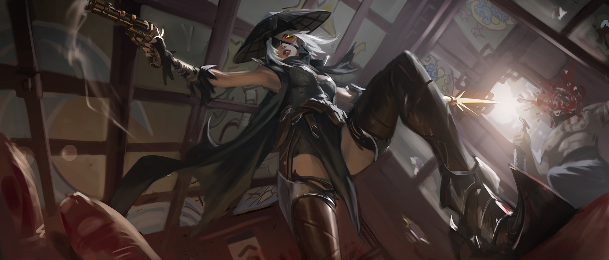

Les Chasseurs de Démons
Organisation :
Différents groupes de chasseurs arpentent les Tertres.
Dirigeant :
Les opérations sont menées par un stratège qui prévoit où et quand frapper, ainsi que les équipes qui doivent être mobilisées.
Nombres de membres :
250-300.
Mots d'ordre :
L'objectif est d'annihiler la présence du Néant au sein de l'Yndrill. Ceci étant trop ambitieux, ils font principalement tomber les têtes de démons supérieurs, qui se font vite remplacer mais cela permet de reprendre souffle.
Recrutement :
Il faut simplement avoir les connaissances et compétences pour ainsi qu'être capable de supporter la haine régulière de ceux qui ne sont pas chasseurs de démons.
Lieu de rassemblement :
Des campements sont installés à l'entrée des Tertres du Temps.
Si les humains, noyés dans leurs sanglots et leur sang, ont été chassés de leurs terres d’origines, les Tertres-du-Temps, ils n’ont jamais délaissé pour autant leur désir de retrouver ce qui leur appartenait.
Ainsi, quelques années après l’installation de Guénazar, des chasseurs de primes se spécialisèrent dans la traque de démons et de créatures servant le Néant. S’établissant dans un avant poste au bord des Crocs-du-Temps, ils se lancèrent dans nombre de missions pour faire décroitre l’influence de Ga’ar.
Aujourd’hui, leur nom est bien connu, et dans l’ombre de leurs sillages, se noient les forces du mal. Le cœur bien accroché et l’arme au poing, ils affrontent par la ruse les immondices qui se meuvent dans leur ancienne propriété, coupant principalement les têtes dominantes, bien que sachant qu’elles repoussent encore et toujours.
La hiérarchie du groupe n’est pas fixe, différentes équipes mènent des opérations en coopération, toutes organisées par le chef de meute, et les chasseurs de démons ne sont plus affiliés à aucune grande puissance, acceptant les braves de toutes origines dans leurs rangs.
Si beaucoup trépassent durant leurs premières missions, les vétérans, ayant l’expérience et toutes les qualités de professionnels, peuvent mener des attaques rusées sur différents points d’affluence des forces obscures.
Dans les armes communes à l’organisation, nous retrouvons des armes à feu et des armes de poing enchantées, notamment par les forgerons nains, pouvant atteindre les créatures immatérielles comme les âmes déchues.
Bien que souvent considérés comme de simples marginaux suicidaires, les chasseurs ne bougent pas de leur position ; Ga’ar reviendra, et ils empêcheront son apogée, quoi qu’il en coûte.